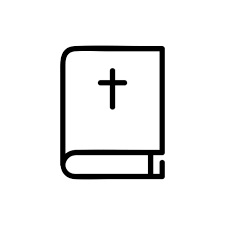

Grupos de estudio
Únete a comunidades dedicadas al estudio profundo de las Escrituras

Red social para el estudio y reflexión bíblica. Conecta, aprende
y crece espiritualmente en comunidad.
Únete a comunidades dedicadas al estudio profundo de las Escrituras
Participa en discusiones constructivas sobre temas bíblicos

Comparte y descubre reflexiones diarias sobre la Palabra
Conocimientos sobre tecnología
25%Usuarios activos diariamente
80%Participación en estudios bíblicos
60%